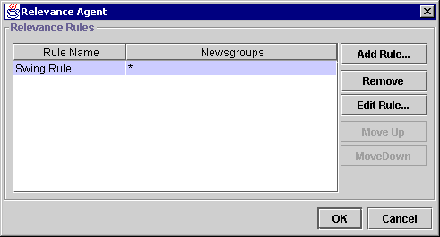

Relevance Agent Configuration Dialogue |
Go to the List Agents Panel of the Preferences Dialogue (Edit:Preferences). Locate and select "Relevance Agent" in the list of available agents. Click on the Configure... button at the bottom right of the panel.

This table contains a list of all the rules you have configured. The name of each rule is in the column headed "Rule Name" and the wildcard of newsgroups it affects is in the "Newsgroups" column. You can swap these columns by dragging the column headers, and resize them by dragging the separator between the column headers.
Use this button to add a completely new rule to the list of Relevance Rules. The Add / Edit Relevance Rule Wizard will be displayed.
Permanently deletes a relevance rule.
Displays the Add / Edit Relevance Rule Wizard to allow you to configure the currently selected relevance rule. Only enabled if a rule is selected.
Allow you to change the order in which relevance rules are processed when message headers are being displayed.
Next Topic: Add / Edit Relevance Rule Wizard Step 1